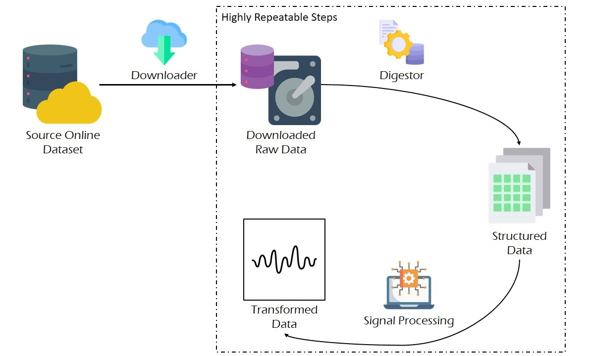
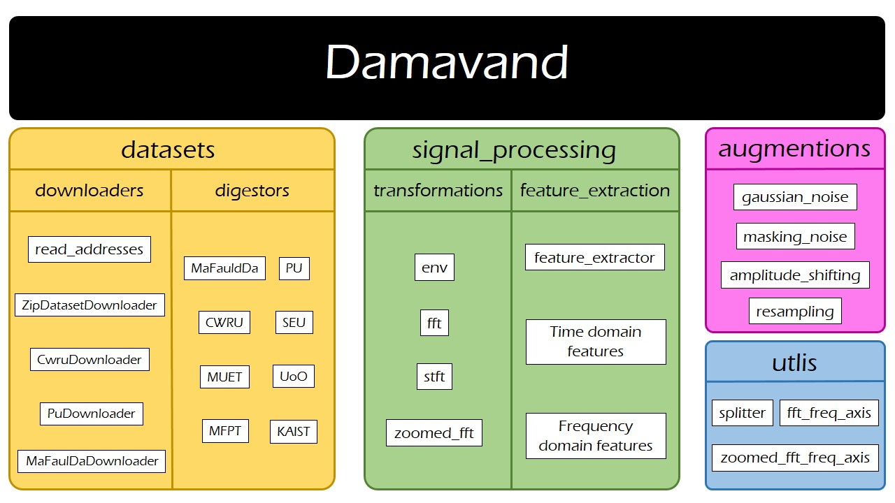

Advanced Topics
Terminology and Lifecycle
Damavand simplifies the development of an Extract-Transform-Load (ETL) pipeline for a rich collection of benchmark rotary machines dataset; followings are the essential steps of such pipelines:
- Downloading the dataset: datasets are downloadable using either custom or general downloaders.
- Mining the dataset: digestors transform raw dataset files into structured pairs of signals and metadata (mining for short).
- Application of signal processing: signal processing tehcniques are employed to process and enrich the signal banks, for the downstream analysis.
The image below, illustrates the lifecycle of a Damavand pipeline. As highlighted in the image, employment of Damavand makes the development of ETL pipelines highly repeatable, resulting in faster iterative trials.

It is worth mentioning that we do not regard data augmentation as an essential step of the pipeline; therefore, we have not included that in this section; complementary explanations on data augmentation using Damavand is provided late on this page.
Anatomy
Damavand currently consists of four modules:
- utils: a submodule to include genral and basic functions
- signal_processing: implementation of the most frequently-used signal processing transforms and features used for vibration analysis
- datasets: this submodule consists of two parts:
- downloaders: helping classes to download benchmark datasets
- digestors: helping classes to process raw dataset files into structured pairs of signal banks and their corresponding metadata
- augmentations: implementation of a collection of data augmentation techniques, suiting vibration data
The image below, illustrates an overview of the Damavand.

Datasets
Available datasets are listed in the table below:
| Dataset | \(F_s\) (kHz) | Rotational Speed | Multiple Loads (Loading pattern) | Classes | Available Channels | Source |
|---|---|---|---|---|---|---|
| MFPT | 97.656 and 48.828 | 25 Hz | Yes (Running load) | Normal BIR BOR | 1 Accelerometer | https://www.mfpt.org/fault-data-sets/ |
| KAIST | 25.6 | 680 RPM to 2460 RPM | Yes (running torque: 0 Nm, 2 Nm and 4 Nm) | Normal BIR BOR M U | 4 Accelerometers (vertical and horizontal per each bearing housing) | https://data.mendeley.com/datasets/ztmf3m7h5x/6 |
| CWRU | 12 and 48 | 1730 RPM 1750 RPM 1772 RPM 1790 RPM | Yes (rotational speed variation) | Normal BIR BOR BBP | 2 Accelerometers (one for drive-end bearing and one for the fan-end one) | https://engineering.case.edu/bearingdatacenter |
| SEU | 2 | 20 Hz 30 Hz | Yes (rotational speed variation) | Normal BIR BOR BIO BBP | 8 Accelerometers | https://ieeexplore.ieee.org/abstract/document/8432110 https://github.com/cathysiyu/Mechanical-datasets/tree/master/gearbox |
| MaFaulda | 51.2 | Variable (tachometer) | Yes (rotational speed variation) | Normal M (vertical/horizontal) U UHB (OR, CP \& BP) OHB (OR, CP \& BP) | 1 tachometer Triaxial acceleration from underhang bearing Triaxial acceleration from overhang bearing Microphone | https://www02.smt.ufrj.br/~offshore/mfs/page_01.html |
| MEUT | 10 | Variable | Yes (running power: 100, 200 & 300 Watts) | Normal (with & without pulley) BIR BOR | Triaxial acceleration | https://data.mendeley.com/datasets/fm6xzxnf36/2 |
| UoO | 200 | Variable | Yes (variation of rotational speed: increasing, decreasing increasing-decreasing decreasing-increasing) | Normal BIR BOR | 1 Accelerometer 1 Encoder (measuring rotational speed) | https://data.mendeley.com/datasets/v43hmbwxpm/1 |
| PU | 64 | Variable | Yes (rotational speed load torque radial force ) | Normal Bearing inner race Bearing outer race Bearing inner/outer race | 1 Accelerometer 2 Current sensors (measuring phase currents) | https://mb.uni-paderborn.de/kat/forschung/kat-datacenter/bearing-datacenter/data-sets-and-download |
In the above table, \(F_s\), BIR, BOR, M, U, BBP, BIO, UHB, OHB and BCP correspond to the sampling frequency, bearing inner race fault, bearing outer race fault, misalignment, unbalance, bearing ball problem, combinatory inner and outer races fault, underhang bearing, overhang bearing and bearing cage problem.